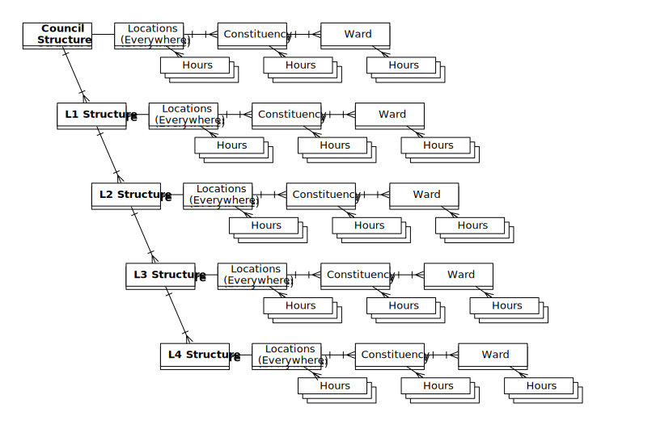
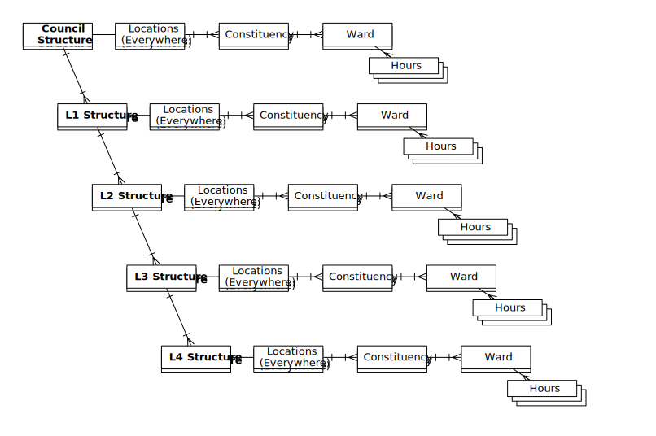
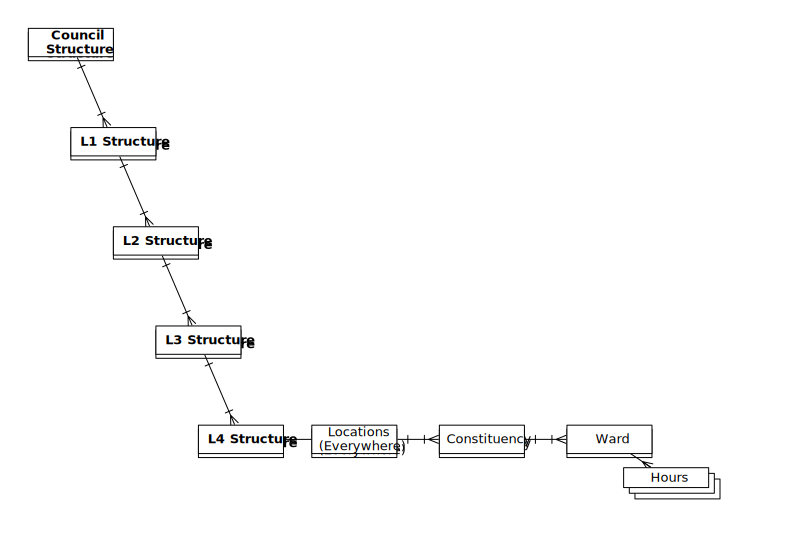
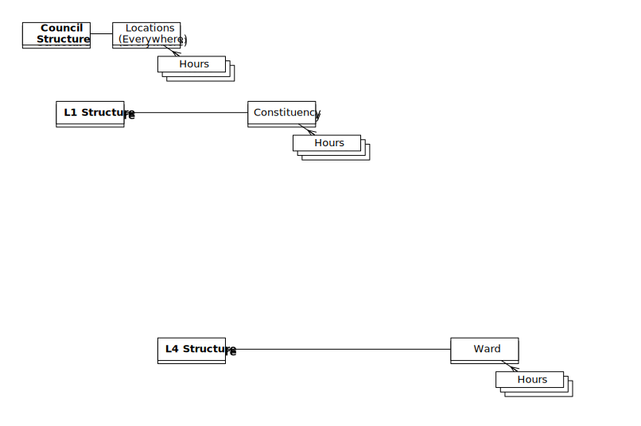

Storing the data
SQL

Data exploration - figuring out what can be done
Slicing the data
Time, Location, Structure
The grand Mongo representation



Deeply nested data structures in MongoDB
Omit what you can, you can recreate it in your models
Beware data duplication, except when it's easier
Snapshots
